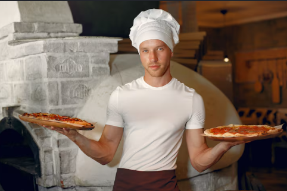
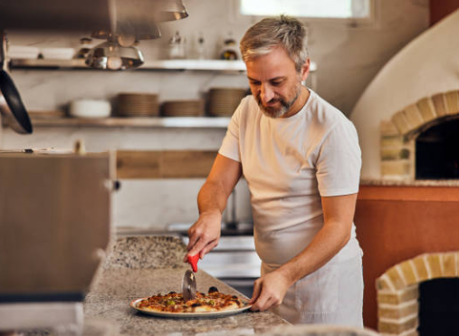

Nuestra historia
Desde 2004 elaboramos pizzas que combinan recetas italianas con ingredientes locales frescos.
Nuestro equipo

Chef Alejandro Silva – Fundador y Director Culinario

Chef Carlos Duarte – Encargado de Hornos y Recetas Originales
Somos un equipo dedicado a preparar cada pizza con cuidado, tradición y el sazón inigualable del tricolor.
Lo que nos distingue
- Masa elaborada diariamente.
- Ingredientes seleccionados.
- Atención cercana para cada cliente.